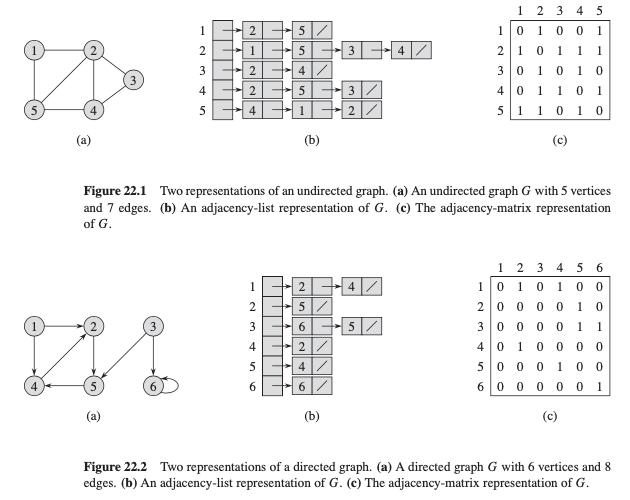
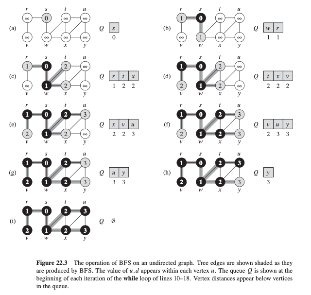

Lecture 9: Breadth-First Search
Contents
Lecture 9: Breadth-First Search¶
Rrepresentations of Graph¶
There are two ways to represent a graph \(G = (V, E)\): as a collection of adjacency lists or an adjacency matrix. Either way applies to both directed and undirected graphs.
Adjacnecy-list representation provides a compact way to represent Sparse graphs: \(|E|\) is way less than \(|V^2|\).
Adjacency-matrix representation when the graph is dense
can help quickly to tell if there is an edge connecting two vertices.
.
Adjancency-list Representation¶
The graph \(G=(V,E)\) consist of an array
G.Adjof \(|V|\) lists, one for each \(V\).For each \(u \in V\), the adjacency list \(Adj[u]\) containts all the vertices \(v\) such that there is an edge \((u,v) \in E\), or contains pointers to these vertices.
The sum of length of all the adjacency lists
\(2*|E|\) for undirected graph
\(|E|\) for directed graph
Similarly, we can define an associated attirbute \(w\) as \(G.w\) to represent weighted graphs. -. \(G.w[u]\).
Disadvantages:
\(O(|E|)\) time to determine if an edge \((u, v)\) is present in the graph
Adjancency-matrix Representation¶
The adjacency matrix \(A\) is \(|V|\)-by-\(|V|\) so that \(a_{i,j} = 1\) if \((i, j)\in E\) else 0
Requires \(O(V^2)\) space
Preferred when graphs are reasonably small.
Implementation of Vertex/Edge Attributes¶
Attributes such as adjacency list, weights can be annotated as
G.Adj, G.w.Similar for vertice or edge attributes:
u.d, (u,v).fetc.But how to implement these attributes in programs??
depends on language and algorthm needs
Breadth-First Search¶
Given a graph \(G\) and a distinguished source \(s\), BFS explores the edge of \(G\) to discover every vertex that is reachable from s and return a
breadth-first treewith rootsthat contains theshortest pathfromstovfor eachvreachable froms.breadth-first: discover all vertices at distancekfromsbefore discovering any vertices at distancek+1.

psedocode: assuming adjacency-list representation
def BFS(G,s):
for u in G.V: # Initialize all vertices --> O(V)
u.color = WHITE # Mark all vertices as unexplored --> O(1)
u.d = inifinity # Initialize the distance to infinity --> O(1)
u.p = NIL # Initialize the parent to NIL --> O(1)
s.color = GRAY # Start to explore vertice s --> O(1)
s.d = 0 # Set the root distance as 0 --> O(1)
Q = [] # Initialze a queue to store Gray vertices --> O(1)
enqueue(Q, s) # Put root s in the queue --> O(1)
while Q != []:
u = dequeue(Q) # Dequeue Q to explore the first vertice u in the queue --> O(1)
for v in G.Adj[u]: # Explore adjacenct list of u --> O(E)
if v.color == WHITE: # If v is unexplored yet, add to the queue for exploring
v.d = u.d + 1 # Update distance of v
v.color == GRAY # Mark vertice as exploring
v.p = u # Set parent vertice
queue(Q, v) # Add vertice to queue for future exploring
u.color = BLACK # Finish exploration of u and mark
Shortest Path¶
After running BFS on a graph, we can get all the shortest paths from
sto any reachable verticevas abreadth-first treeHow to obtain the shortest path from
stov??run BFS on G
recursively check the parent of
vuntil reachs
def shortest_path(G,s,v):
if v==s:
return s
elif v.p == NIL
print("No path from s to v exists")
else:
shortest_path(G, s, v.p)